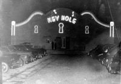

Historical Landmarks Changed3

Cameo Theatre
Keyhole Lounge
Popular entertainment venues such as the Cameo Theatre and the Keyhole Lounge served African American patrons. These were hot-spots for creatives and were instrumental in presenting ideas of inclusion through entertainment.

Good Samaritan Hospital
Ella Austin Orphanage
Establishments such as the Good Samaritan Hospital and the Ella Austin Orphanage directly catered to the needs of the African American community. Some are still in service today or have undergone renovation and repurporsing.